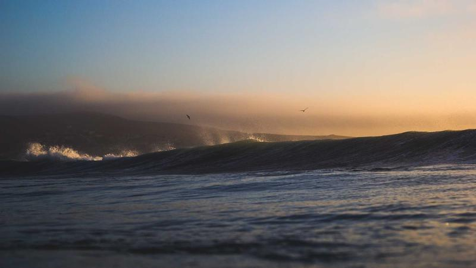

글로벌 탄탈럼 시장 상위 15개사 경쟁 구도 재편 가속

글로벌 탄탈럼(tantalum) 시장이 공급망 불안과 수요 급증이 겹치면서 주요 생산·가공 기업들 간의 경쟁 구도가 빠르게 재편되고 있다. 시장조사기관 Spherical Insights에 따르면 글로벌 탄탈럼 시장 규모는 2025년 기준 약 3억 5000만 달러에서 2030년까지 연평균 6.2% 성장해 5억 달러에 근접할 것으로 전망된다.
탄탈럼은 커패시터(전기에너지를 저장하는 부품), 반도체 공정 소재, 항공·방산 합금 등 다양한 첨단 산업에서 필수적으로 사용되는 희귀금속이다. 전 세계 스마트폰 한 대에 약 40개의 탄탈럼 커패시터가 들어가며, AI 서버와 데이터센터 장비에도 수요가 급증하고 있다. 대체 소재 개발이 어렵고 정제 기술 진입장벽이 높아 과점 구조가 유지되고 있다.
글로벌 탄탈럼 시장의 주요 기업으로는 독일의 H.C. Starck, 미국의 글로벌 어드밴스드 메탈스(Global Advanced Metals), 호주의 아라오(AMG Advanced Metallurgy), 브라질의 CBMM 등이 꼽힌다. 이들 상위 15개 기업이 전 세계 탄탈럼 공급량의 80% 이상을 장악하고 있으며, 정제·가공 단계에서의 기술 역량이 시장 지위를 결정하는 핵심 요소다.
공급망 다변화 압력이 시장 구조 변화를 가속시키고 있다. 기존에 전 세계 탄탈럼 공급의 상당 부분을 담당해 온 일부 아프리카 광산의 공급 불안이 지속되면서, 호주·브라질·캐나다 등 대체 공급원을 확보하려는 경쟁이 치열해지고 있다. 특히 호주 Wodgina 광산과 브라질 광산 지대의 생산 확대가 주목받고 있다.
수요 측면에서는 전기차, AI 서버, 방산 등 세 가지 성장 엔진이 탄탈럼 수요를 끌어올리고 있다. 전기차 전장 시스템에서 탄탈럼 커패시터의 사용량이 내연기관 대비 3~4배 많으며, AI 데이터센터의 폭발적 성장도 고성능 커패시터 수요를 구조적으로 높이고 있다. 방산 분야에서는 탄탈럼 합금이 제트엔진과 미사일 부품에 필수적으로 사용된다.
한국은 탄탈럼의 대부분을 수입에 의존하고 있어 공급망 불안에 취약한 구조다. 삼성전기, LG이노텍 등 국내 커패시터 제조사들은 탄탈럼 조달 리스크를 줄이기 위해 공급처 다변화와 재고 확보에 나서고 있다. 일부 기업은 탄탈럼 커패시터를 세라믹 커패시터(MLCC)로 대체하는 기술 개발도 병행하고 있다.
국내 한 전자부품 업계 관계자는 '탄탈럼 커패시터는 고신뢰성이 요구되는 방산·의료·항공 분야에서 세라믹으로 완전 대체가 어렵다'며 '안정적 조달을 위한 장기 공급계약 비중을 높이고 있다'고 밝혔다. 탄탈럼 가격 변동성이 커지는 상황에서 선도 계약을 통한 가격 리스크 헤지(위험 분산)의 중요성도 커지고 있다.
각국 정부의 탄탈럼 전략 비축 움직임도 시장에 영향을 주고 있다. 미국은 국방비축청(DLA)을 통해 탄탈럼 비축량 확대를 추진 중이며, 유럽연합도 핵심원자재법(CRMA)에 탄탈럼을 전략 광물로 지정해 자급률 제고를 위한 정책을 강화하고 있다. 이 같은 국가 차원의 수요는 기업 간 물량 확보 경쟁을 더욱 심화시키는 요인이 되고 있다.
탄탈럼 재활용 기술도 주목받는 분야로 부상하고 있다. 도시광산(Urban Mining) 방식으로 폐전자제품에서 탄탈럼을 회수하는 기술이 발전하면서, 1차 광산 생산에 대한 의존도를 줄이려는 시도가 확대되고 있다. 독일과 일본 기업들이 이 분야에서 앞서 있으며, 한국도 한민에코텍 등 도시광산 전문 기업들이 탄탈럼 회수 기술 개발에 나서고 있다.
시장 전망 측면에서 전문가들은 탄탈럼의 구조적 공급 부족이 수년간 지속될 가능성이 높다고 본다. 새로운 광산 개발부터 정제 시설 가동까지 최소 5~7년이 소요되는 특성상 단기간에 공급 부족을 해소하기 어렵다. 이는 탄탈럼 가격의 중장기 상승 압력으로 작용하며, 재활용 기술과 대체소재 개발에 대한 투자를 촉진하는 동인이 될 것으로 전망된다.
글로벌 탄탈럼 시장의 재편은 한국 소재·전자부품 업계에 공급망 전략 재설계를 요구하고 있다. 핵심 원자재 조달 다변화, 재활용 기술 투자, 대체 소재 개발이라는 세 가지 축을 동시에 강화하지 않으면 탄탈럼 공급망 불안에 따른 생산 차질 리스크를 피하기 어렵다는 것이 업계의 공통된 인식이다.